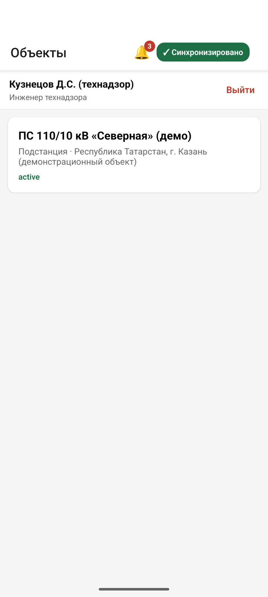
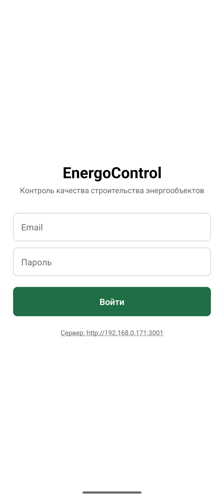

Работа без интернета
Локальная база на телефоне и очередь изменений. Изменения уходят на сервер сами, как только появляется связь, и не теряются после закрытия приложения.
Даже без связи на площадке. Инженер фиксирует нарушение на телефоне, прораб устраняет, руководитель видит картину по объекту и получает PDF-акты.

БылоЗамечания в бумажных актах, фото в мессенджерах. Через месяц не найти, кто что нашёл и когда.
СталоУ каждого нарушения своя карточка: фото, видео, геометка, норматив и история с авторами.
БылоНа подстанции в поле нет связи, и запись откладывается «до офиса».
СталоПриложение работает офлайн и само отправляет данные на сервер, когда появляется сеть.
БылоСроки устранения держат в голове, просрочки всплывают на планёрке.
СталоСтатусы, уведомления исполнителю и отметки «просрочено» и «истекает» у каждого замечания.
Выберите роль и пройдите по шагам. Это настоящие экраны приложения и веб-панели на демо-объекте.

Нажмите на статус, чтобы узнать, кто переводит в него замечание.
Создано. Инженер технадзора фиксирует нарушение: фото, норматив, критичность и срок, при необходимости сразу назначает исполнителя. Дальше: в работе у прораба, на проверке, закрыто или возвращено на доработку.
Локальная база на телефоне и очередь изменений. Изменения уходят на сервер сами, как только появляется связь, и не теряются после закрытия приложения.
17 категорий и 55 типовых нарушений со ссылками на ПУЭ, СП и ГОСТ. Описание и норматив подставляются одним нажатием.
Администратор, руководитель проекта, инженер технадзора, прораб, инженер ПТО и наблюдатель. Каждый видит и делает своё.
Акт по нарушению и сводный отчёт по объекту. Простая электронная подпись проверяется по контрольной сумме.
Аналитика по объекту, структура участков и этапов, пользователи и проверка подписи документов.
Несколько снимков и роликов на одно нарушение, координаты места и привязка к участку и этапу работ.
Приложение для Android (версия 0.2.0, 43 МБ). Напишите нам — поможем установить его и подключим к серверу вашей организации.
Проект реализован при грантовой поддержке Фонда содействия инновациям, предоставленной в рамках программы «Студенческий стартап» федерального проекта «Платформа университетского технологического предпринимательства».